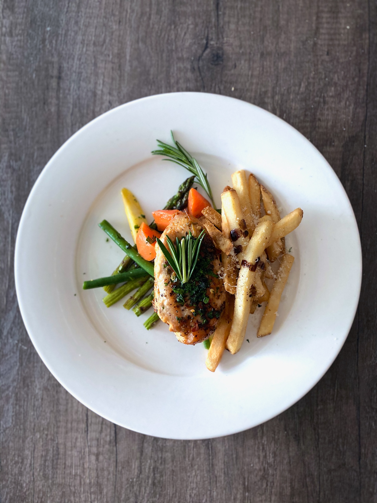

Breast Parmesan

Description
My version of chicken Parmesan is a little different than what they do in the restaurants, with less sauce and a crispier crust.
Recommendations before starting
-
Pound chicken to an even thickness: Pound the boneless chicken breasts out to an even width so they cook evenly.
Basically, you're pounding the thick part down to the size of the thin part, about a half-inch thick.
-
Don't skimp on seasoning:Salt and pepper the chicken well. Then don't bother with salting the flour and bread crumbs.
-
Add Parmesan to the bread crumbs:Use Panko bread crumbs mixed with a little finely grated Parmesan cheese. When you fry the breaded chicken,
the Parmesan will give it an extra crunch and exciting flavor.
-
Rest before cooking:Before frying, let the breaded chicken sit on the counter for about 15 minutes to allow the coating to adhere to the chicken breast.
-
Go easy on the sauce:THE KEY: Don't drown the poor breaded and fried chicken in sauce and smother it in cheese. Too much of a good thing is too much.
You did all the work creating a crisp coating, why make it soggy with too much sauce and cheese?
-
Make sure your oven is hot, hot, hot:Be sure your oven is completely preheated to 450 F. You'll want the cheese to brown slightly and the breading to crisp up before
the chicken gets overcooked, and a nice hot oven is the way to go.
Ingredients
- 4 skinless, boneless chicken breast halves
- salt and freshly ground black pepper to taste
- 2 large eggs
- 1 cup panko bread crumbs, or more as needed
- ¾ cup grated Parmesan cheese, divided
- 2 tablespoons all-purpose flour, or more if needed
- ½ cup olive oil for frying, or as needed
- ½ cup prepared tomato sauce
- ¼ cup fresh mozzarella, cut into small cubes
- ¼ cup chopped fresh basil
- ½ cup grated provolone cheese
- 2 teaspoons olive oil
Steps
-
Preheat an oven to 450 degrees F (230 degrees C).
-
Place chicken breasts between two sheets of heavy plastic (resealable freezer bags work well) on a solid, level surface.
Firmly pound chicken with the smooth side of a meat mallet to a thickness of 1/2-inch.
-
Season chicken thoroughly with salt and pepper. Using a sifter or strainer; sprinkle flour over chicken breasts, evenly coating both sides
-
Beat eggs in a shallow bowl and set aside.
-
Mix bread crumbs and 1/2 cup Parmesan cheese in a separate bowl, set aside.
-
Dip a flour-coated chicken breast in beaten eggs. Transfer breast to the bread crumb mixture, pressing crumbs into both sides.
Repeat for each breast. Let chicken rest for 10 to 15 minutes.
-
Heat 1/2 inch olive oil in a large skillet on medium-high heat until it begins to shimmer. Cook chicken in the hot oil until golden, about 2 minutes per side.
The chicken will finish cooking in the oven.
-
Transfer chicken to a baking dish. Top each breast with 2 tablespoons tomato sauce. Layer each chicken breast with equal amounts of mozzarella cheese,
fresh basil, and provolone cheese. Sprinkle remaining Parmesan over top and drizzle each with 1/2 teaspoon olive oil.
-
Bake in the preheated oven until cheese is browned and bubbly and chicken breasts are no longer pink in the center, 15 to 20 minutes.
An instant-read thermometer inserted into the center should read at least 165 degrees F (74 degrees C).